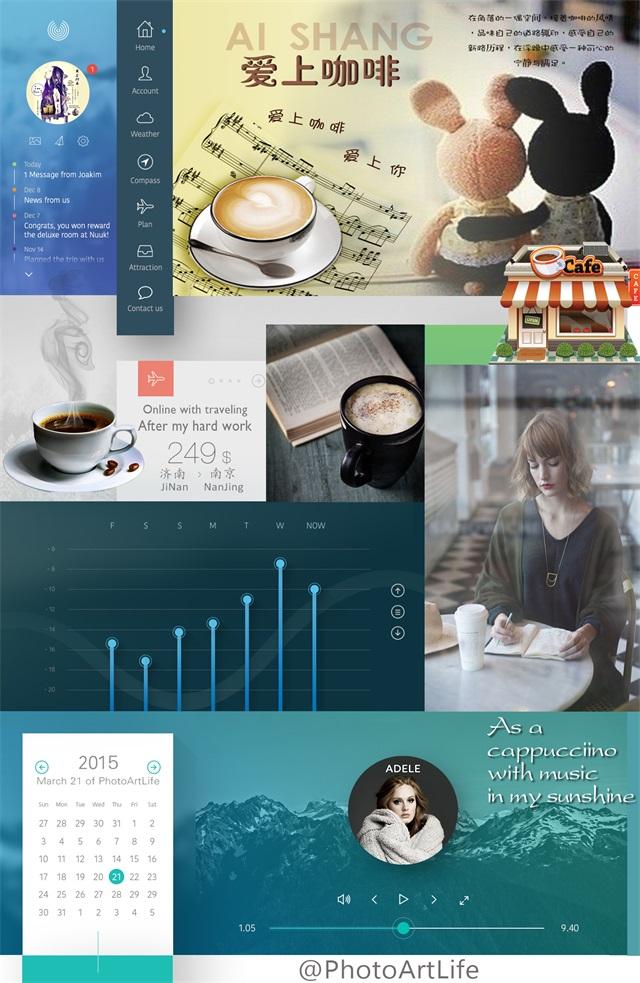

-
走在校园，毕业生给了我以往的念想，有勇气选择就有能力承担后果，我不希望从你嘴里再出现“后悔”的字眼！
每个国王都是活着的神，每个神也都是被谋杀的国王；每个自己都是影子的坐标，每个坐标都是自己的原点。你是怎么理解这句话的呢？
看过视频里一段文字，我把它记了下来，反复咀嚼思考，时而犹豫时而肯定；如果你不能让心爱的女人坐在宝马车里那么就不要打扰她，免得让人笑话！但是亲爱的朋友，在给自己一个交代之前，在还没有彻底甘心之前，请继续努力下去，直到有一天我们都能够以自己的力量平稳地站在大地上，那是属于你自己的力量，不必害怕它消失。这篇文章写给一直坚持早起去图书馆背书却被别人嘲讽的你；写给没有好好学习而在别的方面做出成绩却被人误解的你；写给每个在深更半夜还在为了自己想要的生活而努力的你。
分享大学身边的一个“影子”，有一个很传奇的同学甲，他基本不翘课，还能一周打三份工。传奇的地方在于，他其中的一份工作会占据他大量的时间，他从下午四点出门工作，可以一直工作到第二天凌晨4点回来，有时候甚至可以工作15个小时。在其他空余的时间里，他也会去餐厅打工，我一度怀疑我身边的这个人是不是地球人，因为在我看来地球人是需要一定的睡眠和休息时间的，然而他似乎不用。对于他这样的生活作息，我们一堆朋友基本都保持着一个态度：太拼命了，这简直是在透支青春。
后来我们发现，这样的劝阻跟你去劝说一个熬夜好多年的人不要熬夜一样无力。
身边的一个女生乙，在没有毕业之前一副女强人的态势，考研、社团活动、晚会主持，哪儿都有她的身影。她自己也说着不会那么快地想要稳定下来，然后她突然结了婚。我们几个人聚会的时候，有那么一次说到曾经她那么拼，现在放弃了那些会不会觉得可惜。她说了一句很玄乎的话：其实这就是属于我的人生，度过一个很苦很奋斗的青春，然后突然发现自己真正想要的。好友前两天在凌晨4点给我发来微信，他那里是早上7点。他跟我说着自己最近的苦，设计遇到神甲方，说着他已经好几天没有好好睡。我突然很想说，如果他想要的东西少一点，是不是就不会这么累。然而我忍住了， 因为对于他来说，苦就是他存在的方式，那是属于他的标签。
我突然想，我们所谓的存在的方式到底是一个什么样的东西。到了某个时刻——对于我们中的大多数，也许现在就是这个时刻，会发现生命中的人都开始有了各自的轨迹。有的突然就结了婚，有的读起了博士；有的进了银行，开始在微博上吐槽起自己的职场生活；有的则依旧在旅行；学会计的最后做起了生意，学管理的最后进了银行，说着不想结婚的人，第一个结了婚。他们都是我很要好的朋友，然而我们都有着不同的生活方式。比如我从来做不到为了赚钱去那么拼命，我也不想早早结婚。也许我唯一能做到的，就是和我好友一样，改方案改通宵。曾几何时，我们都是一起上课一起下课，一起在同一个地方生活，然而最后我们都走向了自己的生活轨迹。而我在进入我自己的间隔年之后，有时候早上九点多起床，每天晚上三点多睡觉，有着不算规律的睡眠时间。下午看一会儿书，看到不想看为止，有时候会忘记吃饭，有时候看一小时就看不下去。回家对着word，sublime发呆两小时，写得出来最好，写不出来也是常态。
没有四处的旅行，没有拍漂亮的风景，这跟我以前向往的间隔年完全不同，然而一两个月以后，我开始觉得，也许这才是我想要的间隔年。我曾经也因为朋友有着比我更好的工作，有着更好的生活而苦恼不已。我曾经也被他人生活中闪闪发光的东西迷失了自己想要的，而我现在觉得，我没有必要去羡慕他们。因为他们有着他们想要的，我有着我自己想要的。总有人比我工资高，总有人比我去的地方多，总有人过得比我光鲜，这些都和我没关系。能知道自己想要的不容易，没必要为了那些所谓的标签改变自己。在我和好友聊着未来会去往什么地方的时候，我突然得到一个结论，也许对于现在的我们来说，不管去什么地方，都会有点虚，生活在哪里都一样。关键是如何生活。在微博里我说：“有人相遇十天，闪婚了过得很好；有人一起十年，还是分开了；有人这年实现了梦想，春风得意；有人这年处处不如意，苦不堪言。这些都没关系，如果为了梦想，你愿意赌上你的时间，那就去赌；如果为了眼前的人，你愿意赌上自己的感情，那就去赌；只要你能为了梦想，愿赌服输，只要你能为了他，愿赌服输。”我以前没有听懂那个女生的话，现在的我也许明白了：当你回头看的时候，你会发现一切都有迹可循。为什么苦？为什么会走上现在这条路？你对着镜子问问自己，你会发现，你现在的境遇从某种程度上来说，都是自己选的。既然是自己选的，就不要抱怨，有的时候一条路开始了就不能回头，也不要去回头，不为了别的，只因为既然在开始时你有勇气做选择，就要有本事自己承担起后果。我们都在按自己的方式活着，也许看起来过得很有意义，也许看起来过得毫无意义；也许看起来过得很安稳，也许看起来过得不靠谱；也许你和我一样写着没人看的书，去没人知道的地方；也许你在喜欢着一个不可能在一起的人，为了他做很多别人看起来“不值得”的事。
我们的生活标签是什么？我们所谓的存在方式是什么？你自己去定义。你知道，来到这个世界上，你就没办法活着回去。你和别人的不同，就在于你怎么活。没错，你身上一定有能让你发光的东西，那是你自己的节奏，那是你与众不同的东西。那是你的路，你必须自己走，才能找到出口。这些看似多么成熟的有迹可循的道理，脍炙人口的让你充血似的毛骨悚然，但是，你不要忘记多少文章和人也对你产生同样甚至强烈的这种感觉，而你都在原徘徊或者进进退退，没有持久的目标和强大的内心战胜孤独和深夜，所以社会就是市场，很多人在上了大学成了“人渣”；很多走在了“人渣”和“人才”的过渡路上，活得自己都不知所以然，只有在深夜傻傻的笑；“人才”永远属于孤独的人，这一点只有经历能够告诉你一切，和深夜的星星对话是我们共同的习惯。朋友再多都不会让你找到“自己”；至于答案，我也不清楚，你想要得到，就必须问问自己。
-
《古之立大事者，不惟有超世之才，亦必有坚韧不拔之志》与《我的孤独就是一所后花园》
回到校园里，夏日艳阳的肆无忌惮，毕业季学生的忙碌与兴奋，辗转反侧。一切仿佛是那么熟悉，又有几丝陌生。偶然间想到这些话：来自苏轼的《晁错论》— 古之立大事者，不惟有超世之才，亦必有坚韧不拔之志！还有女神刘亦菲的肺腑之言：我的孤独就是一所后花园。我只能说在我眼中，她是一位神奇又有情怀的气质女人！大腕于世且钟情于文哲孤独，极好的把握人生与社会关系。鄙人心中自是深深敬仰，用望其项背这个词都有点高估了笔者的EQ！我想末句的思想要包含多少心血，忍受常人所不能忍之痛与孤，实属不易！少年，告诉你一件事：读书与实践两者要紧密协调一样都不能少！在这个浮躁与网络社交盛行的年代，能享受孤独并爱上她，沉淀自己安静的去读书无疑是一种修炼的境界，这一点一些隐居的文学家和少有的公共人物做的都很棒！
我想忠于内心的智者基本都静谧在书房里，这一类人都喜欢孤独喜欢悦读，反而发现世界还可以如此奇妙，都有自己的后花园；活读书使人聪慧，善解人意，也许很多时候生活的一些细节场景都可以折射出我们的一些人生哲理；有女孩问我气质怎么定义呢？个人感觉气质这种由内而外的神奇自是不敢轻易揣摩论之，她靠的是多年的文学素养或早入世经过岁月沉淀下来的美，很难捕捉，也不敢轻易探索。就像我们在水房打自来水时，阀门开的比较大想接的快点但是很难把瓶子装满，拂去泡沫发现还是差了两成，于是我们又得回头调小阀门重新接满。很多时候我们自以为是的看透生活，最后往往会被生活狠狠的打耳光；很多时候我们都想跑的更快，从小我们就树立远大目标渴望少年得志，后来慢慢经历点事后发现生与死没有那么遥远，成功和财富不是唯一追求的事物，享受青春享受生活成了一些朋友推荐给我的美好祝福，我很荣幸也在身体力行。所以气质没有绝对的定义，只是字典里有这个词语，而多被一些美的事物与人引用或形容，自然拔高了她的标准。有句话个人还是比较认可的，生活中本不缺少美，而是缺少发现美的眼睛！审美标准不同，自然爱的视角和产物有所差异。
她独自爬上开满二月兰的小坡，斜阳下，她像是自带反光板，微微闪着光。坡上有花，花间有溪，溪畔有人。她像个狡黠的精灵，花丛中，冲你粲然一笑，你便决定追寻下去，哪怕翻山越岭，只为再见一面。
美的事物与人，好的品性与人生，我和你一样，都不会拒绝，在寻找，在追求！
-
关于欲望、天才、时间、人生目标、后悔和经历、财富的“星期原则”！
前两天就看了Steve Pavlina的几篇文章，一直在路上想却由于太忙没有动笔记下来。从环宇城回到图书馆，我开始边走边想这几个问题：假如你的一生算成24小时，你感觉你现在活到几点了呢？你希望成功和财富在你人生遇到什么场景时到来呢？大学孤独你真正战胜和享受它了？虽然都说人生是马拉松，但为什么你还是想跑的更快一些呢？好多问题，我也在想是否把自己时间多分散一些给女性和其他领域的好友呢？晚上静静思考这几个问题，记下来，至于答案藏在心中就好，可能明天我不在了地球还是一样会旋转！
身边的人都很拼都很努力啊！我们谁没有为了一个目标连续熬夜奋斗过呢?我们谁没有为了得到一样东西而撕心裂肺地付出过呢?谁没有过那种拼命得快受不了的感觉呢?所以我们最不缺励志的故事，因为我们每个人都是付出领域的专家！
关于欲望:这些是我们内心里和人生理想一样真实的东西：学历、工作、房、车、财富、以及爱。我们每个人都愿意为了这些欲望去付出，无论付出的是汗水、鲜血、还是身体健康、又或是其它你懂的。真正的问题是，当我们跑得越快，越是无法考虑我们是否在朝着正确的方向奔跑。所以有时候对有些人来说选择大于努力，中国人分成九个等级层次，如果你有幸遇到奇遇得到贵人相助，那么你只需要在眼下储备好知识并抓住机遇而不让它有偏差就很棒了！人爬的愈高随之欲望就越无穷，许多下马官员可能就是多走了一步，湿了鞋亡了身。人类的需求是很奇特的。马斯洛五大欲望：生理需求、安全需求、归属与爱的需求(社交需求)、尊重的需求和自我实现的需求。我们现在的不幸福却是因为不小心把快感当成了幸福感，把欲望当成了需求，而这就是因为我们常站在现在的视角去想象未来的感受。我们不需要很多的财富，不需要很多的爱。因为他们很难给你带来更多快乐。你会发现其实这五种需求一样真实，离你一样近，也一样远。然后你需要找到一个可以同时实现这五种需求的平衡点。这个平衡点就是只属于你的奔跑方向。我们到底追求的是什么？这个问题真的很难回答。外界带给我们生活最大的影响是嫉妒和比较，而我们一直高估了嫉妒！
对于别人称呼的牛人色彩标签我认为那些只不过是人们打招呼的方式，这的确是一个人人都用标签来识别对方的社会，但是我们要记住我们的价值和我们身上的标签没有半毛钱关系。成功不是你有什么标签，而是你用这些标签做了什么。
不要去考虑什么天赋异禀，一切都来自经历和渴望。天才都是苦逼的，他们很清楚的知道自己究竟需要什么，并且很嗨地追求着。每个人拿时间换每样东西的汇率都不同，有些人可以用很少的时间换到很多的财富，有些人需要用很多的时间换到很少的幸福。但是事实是，只要你愿意花时间，你可以换到任何东西。所以你要想清楚，你到底要用时间来换取这世上无限可能中的哪些。打开你的视野，你会发现有太多经历和体验可以让你去换取。人生就是一场巨大的RPG(角色扮演类游戏)，你扮演你自己。你唯一升级的方法，就是不断地积累EXP(Experience)。我们许多人都喜欢读励志贴也很懂道理，但只有经历才能让我们真正把那些道理变成意识，这些需要用一生的时间去磨砺，去沉淀。
去体验不同的经历。去爱，去恨，去在热恋中没心没肺地笑，去在失恋后声嘶力竭地哭，去翘课，去拼了命的读书，去让自己真的领悟那些道理。你所尝试的事，你所认识的人，都是你经历的一部分。不管经历事物的对与错，他们都是你生命历程的重要组成部分！帮助你去理解你一直知道但是不曾真正理解的事，帮助你去看到一直存在着但是你不曾看到的世界。不要重复一样的经历，就像曲婉婷的歌里唱的那样：世界之大，为何我们相遇？因为这个庞大的世界有太多有趣的人等待着我们去认识、太多截然不同的经历等待着我们去体验！
对于曾经的爱情，友情还有深爱的、不想伤害的人，不敢接近的人，我们的后悔已成过眼云烟，自然想起来的概率了了. . . 我们活着不是为了追求什么瞎扯的“无悔的生活”，我们不用为那些后悔而伤心痛苦。因为在我们选择的这条道路上，后悔不是告诉我们曾经做错了，而是告诉我们怎样可以做得更好。如果你知道你真正想要的是什么，那么你算是比较舒服的。一支笔，几张白纸，写下你的人生目标:最终的答案一定会是一句比较长的句子，或者几个短句子的组合。这个答案在外人看来一定非常的空洞，就像是我前面所说的那种“谁都知道，但是只有少数人真正理解的大道理”。但是这几句空洞的句子会对你有非常丰富而且有意义的含义——因为这是你自己用了至少一个小时的时间和精力去整理你过去所有的经历，去思考，去判断，去剔除，去整合，去沉淀，最终领悟出来的交集。清空记忆集合所有的情绪垃圾，剔除了欲望带来的杂七杂八的“伪装的需求”，经过沉淀以后得出的内心最深处最想要的东西也许就是我们若干年苦苦追寻的吧！只不过来的早晚不同罢了！
关于现实和人生目标，我们都需要用青春去埋葬去播种耕耘，过去所有的辛勤付出他日都会用内心深处的声音大声的呐喊吧！又想起了离开图书馆的路上，形形色色的莘莘学子怀揣着不同的梦想，单与双，静与乱，快与慢，通往各自的轨道，最终只有彼此舒服的人还会保持不间断的联系，至于为什么，路还是自己走出来的。我享受闭关期间的所有状态，一个人去处理几乎所有事情，感激时间赐予我控制自己的能力，对此，就像远远看着喜欢的姑娘，不想多说，只会默默坚守，因为我们都懂！
我的生命，享受着这种“星期原则”，动态且有规律的循环着，至死而已！
-
现在的我是否是我想要的我呢？
深夜，还在看文章的我又陷入了漫长的思考，音乐，键盘. . .
好多东西不及时记下来真的很难再想起来，至少我是这样。我想学好基本交流语言来一次长远的旅行，我想读完柜子里面的书就暂时离开互联网一段时间，我想比现在再努力一点或者少睡会懒觉，我想的好多如空气一样不断的循环着，而且我也基本习惯了现在几点一线的生活，暂时不想接触任何人，只留我自己去思考，去挣扎。

习惯了孤独，爱上了思考，反而不是因为朋友少；习惯了单身，爱上了自己，反而不是因为没时间；习惯了深夜，爱上了写作，反而不是因为装文艺；习惯了自己去生活，朋友和家人都安好，我想一个人静静的修行，挑战一下自己是否真正能打败自己以及抗的住孤独带来的煎熬，结果我发现在路上时很痛苦，我知道这种场景就像蛇蜕皮，蛾脱壳一样难受，真正挺过去一切都是柳暗花明，而且你也会懂这些都是成熟的重要阶段和成为强者的必修课程，如果这一关都过不去那么其他什么高大上的理想就都别提了。怎么修炼这种素质，怎么利用时间和周围环境，回头看都是一门艺术，后来习惯了自己的方式：学说语言和翻书直到睡着。
如果你还在念大学，最好就是利用睡觉和放松之外的所有时间积累知识锤炼综合素质，那么你的筹码就会得到上帝的公平对待！
如果你有幸按照上面计划去执行，那么恭喜你将会收获一份折腾的人生，斗士的岁月！
-
浮躁的年代里别指望改变多少，暂且做到不被世界改变吧！
我们真的很难坚持某一原则和习惯，是否有始有终？是否守得住底线，真正抗得住孤独呢？这真的很难做到，不是随意的牵手就能满足你的欲望！
最近几天工作和日程比较紧所以放慢了网络的脚步，在路上就多想想多留点心回头赶紧记录下来，记住不能中止习惯否则很难再找回感觉，找回自己。重获单身自由无疑是对青春最好的放浪不羁，看着外面的浮华虚荣，是否依然能保持强大的内心和控制自己的饱和情绪？理想也会随着外界环境和自身经历等综合因素的影响而改变。看过《匆匆那年》《左耳》《万物生长》等青春岁月片，起码我明白了青春面前爱情多数只是3分钟荷尔蒙的刺激，没有真心和学识，物质条件等谈山盟海誓实在有点可笑，当然我还是很期待能够喝到同学夫妻的喜酒。太多时候不是为了自己而活着，谈梦想不如说欲望来的实际，或者是让当初瞧不起我们的人能够尊重我们，让那个看不上哥的姑娘有一天会哭着说后悔、、、正如《中国合伙人》里面孟晓骏送给成冬青的字典里面写着“有一天我一定会让你嫉妒”的语境一样，我们都想通过奋斗来证明自己的强大战斗力和价值，但要记住人外有人天外有天，所以你只需保持积极向上的节奏和日益学习的沉淀路线就能在百万同龄人中稍胜一筹，而你有自己的想法也自然不会被社会这个大染缸染得五颜六色了，因为勤奋的你早已经百毒不侵了！
别想着改变太多或者世界，先改变自己让自己优秀起来迎接早上的日出吧！
-
备注声明
工作原因，文章板块均移步到微信公众平台的原创媒体，感兴趣者可以添加微信号：PhotoArtLife(或识别右侧二维码添加编辑WeChat)
二维码
微博私信
回到顶部